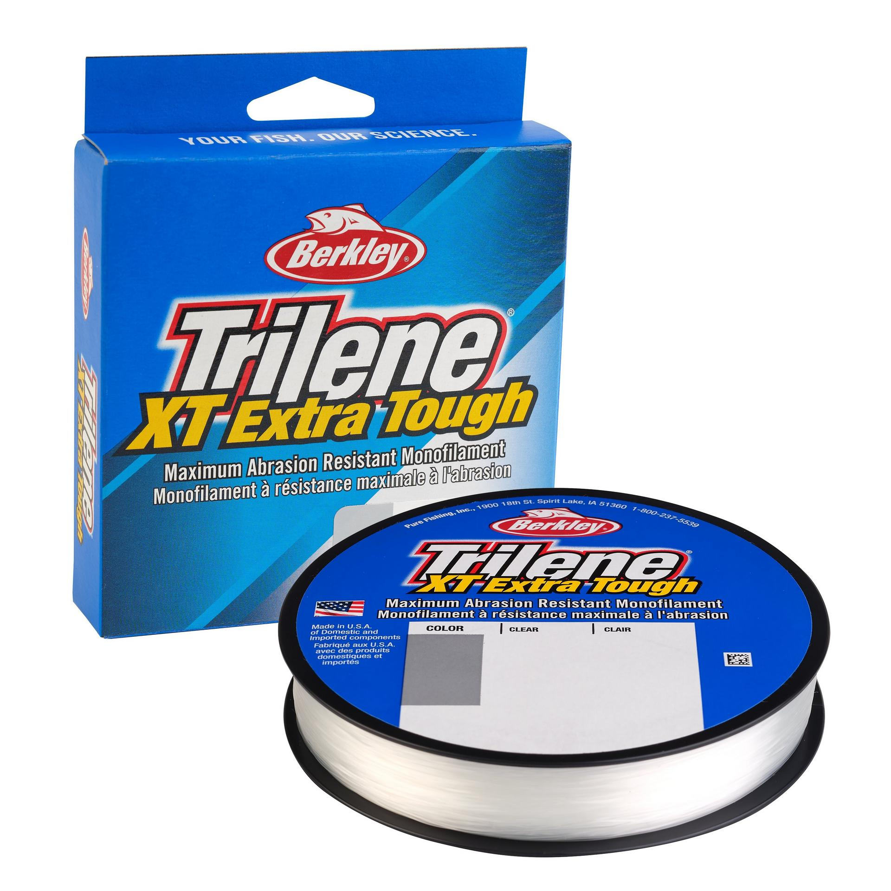

Berkley Trilene XT: 2020 US Reference
Diameter chart, reel capacity & backing guide

2020 US catalog reference, not a current-edition chart. These Trilene XT Clear filler-spool specifications come from Berkley's 2020 Product Guide. The guide records 4-30 lb options with lengths that change by strength; current formulation and availability are not established here.
- Construction
- Nylon monofilament; Trilene XT Extra Tough
- Listed strengths
- 4-30 lb
- Line type
- Monofilament main line
Planning around a documented XT spool
XT is Berkley's abrasion-focused nylon monofilament. For a spool matching this historical reference, compare its printed diameter and model code before estimating capacity. The 10 lb entry is .014 in, so a reel marked for a different 10 lb line can hold a different amount. Do not apply this chart to unidentified older stock.
How much Trilene XT will fit?
Calculated estimates, not measured fills. Stop at the reel manufacturer's fill level even if some line remains.
Berkley Trilene XT diameter chart
Historical 2020 US manufacturer chart, printed page 236: Clear XTFS filler spools only. Inches are published; millimeters are converted at 25.4 mm per inch. Lengths are historical catalog offerings, not confirmation of current stock or edition. There is a 14 lb row, not a 15 lb row.
| Strength | Inches | mm | Spools (yd) |
|---|---|---|---|
| 0.008 | 0.2032 | 330 | |
| 0.010 | 0.254 | 330 | |
| 0.012 | 0.3048 | 330 | |
| 0.014 | 0.3556 | 300 | |
| 0.015 | 0.381 | 300 | |
| 0.016 | 0.4064 | 300 | |
| 0.017 | 0.4318 | 300 | |
| 0.018 | 0.4572 | 270 | |
| 0.021 | 0.5334 | 250 | |
| 0.022 | 0.5588 | 220 |
Choosing your Trilene XT strength
At 4, 6, and 8 lb, the historical chart lists .008, .010, and .012 in respectively, each on a 330 yd filler spool. Check the reel's diameter-based capacity rather than assuming every 330 yd package is one reel fill.
The 10, 12, and 14 lb options use .014, .015, and .016 in line on 300 yd spools. Choose within the rod and lure ratings, then check how much that actual diameter leaves on your reel.
The 17, 20, 25, and 30 lb chart entries increase to .017, .018, .021, and .022 in. Package lengths step from 300 to 270, 250, and 220 yd; strength and package length must stay paired.
The later XTFS14-15 package photograph independently shows 14 lb, .016 in, and 300 yd. It supports that exact labelled package, not an assumption that the entire 2020 range is unchanged today.
This is a source-based specification and setup guide, not a hands-on performance or aging test.
Want a guided recommendation?
Continue in the Setup WizardSame pound test, different diameters
At your selected strength
Loading diameter comparisons...
What changes with another line?
Nearby diameters in the line database
| Line | Strength | Inches | Difference |
|---|---|---|---|
| Loading line database... | |||
Backing, working line & leaders
Match the historical label first
Confirm Trilene XT, strength, diameter, and the XTFS model code on your own package. A modern product image identifies the family but does not date your spool or validate its condition.
Keep package length with strength
The archived 8 lb package contains 330 yd; the 10 lb package contains 300 yd. Plan working line and any backing from the selected diameter and the exact length printed on your package.
Condition matters with old stock
A catalog reference is not a statement that an old spool is fit to fish. Inspect stored line and test your knots before use; stop filling at the reel maker's specified level.
How Much Fits on These Reels?
Estimated full-spool capacity for the Trilene XT strength selected above, with no backing. These are calculated examples, not physical tests or recommendations for every pairing.
Loading capacity estimates...
Trilene XT questions, answered
Are these current Trilene XT specifications?
No. This is an explicitly historical 2020 US Clear filler-spool chart. Current product pages identify the family but omit line diameter metadata. The chart does not establish current formulation or stock.
Why does the archive address contain 2021?
The hosting directory is named 2021_berkley, but the actual catalog cover says 2020 Product Guide and the page title identifies the 2020 catalog. The document itself determines the year.
Is the chart entry 14 lb or 15 lb?
14 lb. The manufacturer lists XTFS14-15, where the final -15 is part of the model code, not a 15 lb strength. No 15 lb entry is established by this source.
Why does 14 lb show .4064 mm rather than .40 or .41?
The historical chart publishes .016 in only. Its metric value here is an explicit conversion. Separately pictured Berkley labels round their metric fields differently; those fields are not substituted into the historical chart.
Does a 300 yd filler spool mean my reel holds 300 yd?
No. It is the packaged line length. Reel fill depends on the reel's spool capacity, actual line diameter, fill level, and any backing.
Specifications & sources
Sources reviewed 2026-09-13. Historical 2020 US manufacturer chart, printed page 236: Clear XTFS filler spools only. Inches are published; millimeters are converted at 25.4 mm per inch. Lengths are historical catalog offerings, not confirmation of current stock or edition. There is a 14 lb row, not a 15 lb row. The product image identifies the family, not every selectable strength or the source edition. Match your own package before applying these estimates.
Calculations use the catalog's listed inch diameters. Published inch and millimeter values may differ slightly because of rounding.
- Berkley US Trilene XT Filler Spool Manufacturer product identity, construction, and product code/model matching. Numeric diameter metadata is blank; not the numeric source.
- 2020 Berkley Product Guide cover (archived by WesternBass) Original manufacturer publication, third-party archive. Historical 2020 US reference; not current availability.
- 2020 US Berkley manufacturer XT chart, printed page 236 Original manufacturer publication, third-party archive. Historical 2020 US reference; not current availability.
- Manufacturer package photograph: xt 14 tw label Read the actual Berkley label in the photograph. Hosting site descriptions or test results are not the numeric authority.